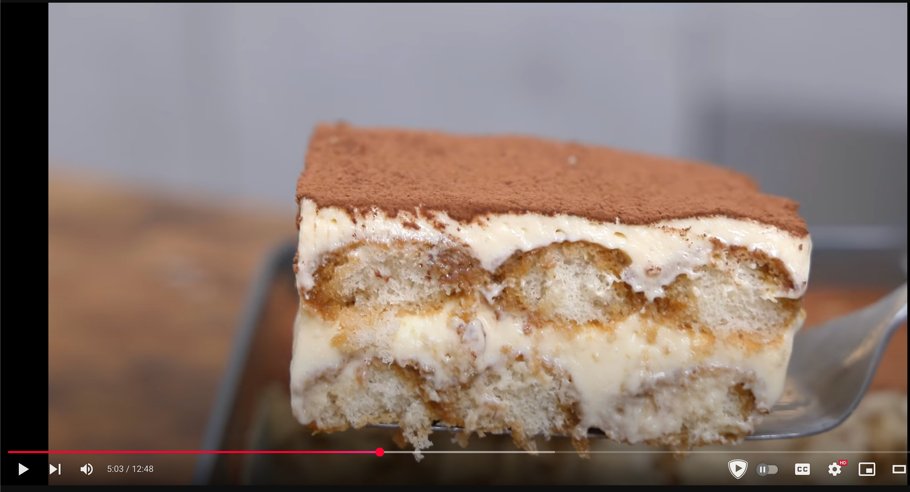

Ingredientes
Instrucciones
- Mezclamos las yemas con el azucar en un bol.
- Calentar la mezcla hasta 70 grados al baño maría.
- Tamizamos, las pasamos a una bandeja, las cubrimos con film y las dejamos enfriar.
- Batimos el mascarpone durante 1 minuto.
- Con las yemas a temperatura ambiente, las añadimos a un bol y batimos durante 4 minutos.
- Añadimos el mascarpone en tres tandas y vamos mezclando.
- Preparamos el café y lo mezclamos con el ron (opcional).
- Separamos la mitad del café.
- Mojar los bizcochos por la parte superior y colocar.
- Cubrir primara capa y barnizar con el café sobrante de la primera mitad.
- Añadir primara mitad del la crema
- Repetir todo
- Reposar 8 horas, mejor 1 dias
- Cubrir con cacao en polvo